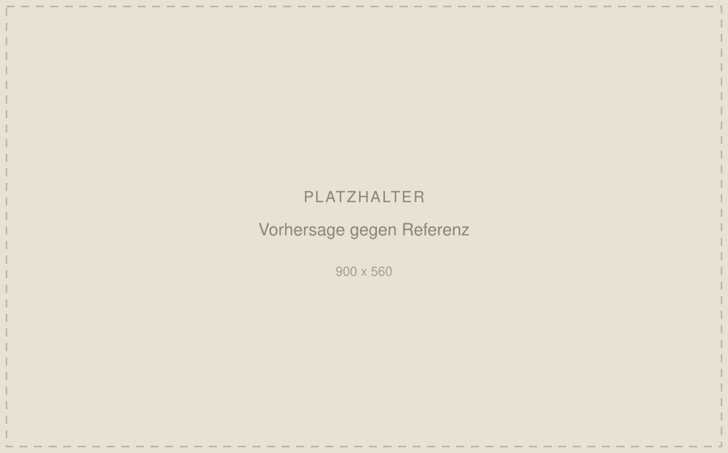

- Kontext
- Masterarbeit, FAU Erlangen-Nürnberg
- Zeitraum
- 10/2025 – 02/2026
- Feld
- Faserverstärkte Verbundwerkstoffe
- Technologien
- PyTorch, NumPy, SciPy
Inverse Parameteridentifikation an Faser-Matrix-Grenzflächen
In faserverstärkten Verbundwerkstoffen entscheidet die Interphase zwischen Faser und Matrix maßgeblich über das Bauteilverhalten. Ihre Parameter lassen sich messtechnisch kaum direkt erfassen. In der Praxis bedeutet das: aufwendige Versuchsreihen oder Annahmewerte aus der Literatur.

Der Ansatz
Ich habe ein physikinformiertes neuronales Netz (PINN) entwickelt, das diese Parameter invers bestimmt. Eingang sind die effektiven Kompressions- und Schubmoduli eines dreischichtigen Interphasenmodells, Ausgang der Parametersatz, der genau diese Moduli reproduziert.
Die Mikromechanik der Homogenisierung steckt dabei in der Verlustfunktion selbst: das Netz lernt nicht nur aus Daten, sondern gegen die Physik. Damit bleibt die Lösung auch dort physikalisch sinnvoll, wo der Trainingsdatensatz dünn ist.
Was über die Genauigkeit entschieden hat
Drei Eingriffe, in dieser Reihenfolge: die Korrektur falsch annotierter Randfälle im Trainingsdatensatz, adaptive Verlustgewichtung, und Gradientenbegrenzung gegen instabile Updates. Der erste Punkt war der größte Hebel: fehlerhafte Labels an den Rändern des Parameterraums haben das Modell systematisch in die falsche Richtung gezogen.


Vorhersagefehler unter 5 %
Genau genug, um Versuchsreihen gezielt zu ersetzen statt sie vollständig zu fahren. Das ist der eigentliche Nutzen: nicht der Ersatz des Labors, sondern die Entscheidung, welche Versuche sich noch lohnen.